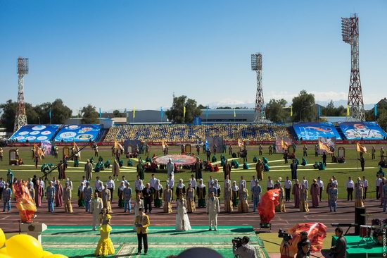

Оқушылар турнирлері: шағын футбол және волейбол
Жетісу өңірінде мектеп оқушылары арасында шағын футбол мен волейболдан спорттық турнирлер ұйымдастырылып жатыр.
Жарыстар өңірдегі білім беру мекемелерінің оқушылары арасындағы бұқаралық спортты дамытуға және салауатты өмір салтын насихаттауға бағытталған.
Турнирлерге әртүрлі жас санатындағы мектеп оқушылары қатысып, өзара бақ сынауда.
Ұйымдастырушылардың айтуынша, мұндай жарыстар жасөспірімдердің спортқа деген қызығушылығын арттырып қана қоймай, олардың тәртіпті, жауапкершілікті және ұйымшыл болуына ықпал етеді.
Командалық ойындар арқылы оқушылар бір-бірімен тіл табысып, ортақ мақсатқа жету жолында бірігіп әрекет ету дағдыларын қалыптастырады.
Жарыс барысында жас спортшылар өздерінің дайындық деңгейін, төзімділігін және тактикалық қабілеттерін көрсетті.
Әсіресе шағын футбол мен волейбол ойындары көрермендер арасында жоғары қызығушылық тудырды.
Турнирлер достық әрі тартысты жағдайда өтіп, қатысушыларға жағымды әсер сыйлады.
Жарыс қорытындысы бойынша әр жас санатының жеңімпаздары мен жүлдегерлері дипломдармен, медальдармен және естелік сыйлықтармен марапатталды.
Сонымен қатар, ерекше ойын өрнегімен көзге түскен үздік ойыншыларға арнайы алғыс хаттар табысталды.
Ұйымдастырушылар алдағы уақытта да осындай спорттық іс-шараларды тұрақты түрде өткізуді жоспарлап отыр.
Мектеп оқушылары арасындағы спорттық турнирлер Жетісу өңірінде жасөспірімтерді дене шынықтыруға баулып, болашақ чемпиондарды тәрбиелеуге жол ашады.